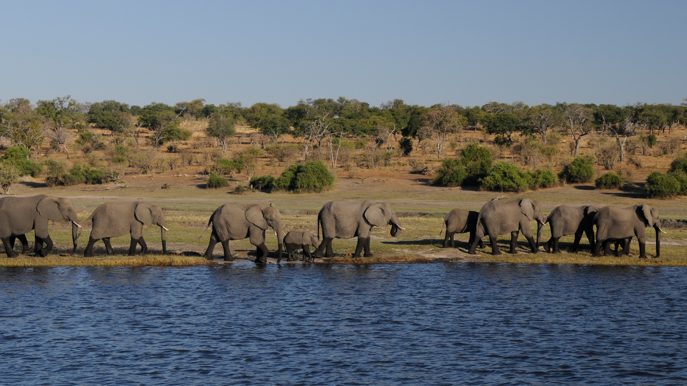

Wildlife of Botswana
Botswana is home to some of Africa’s most spectacular wildlife. From elephants to lions, visitors can experience a rich biodiversity in protected environments.
- Chobe National Park – famous for elephant herds
- Okavango Delta – unique wetlands with abundant wildlife
- Moremi Game Reserve – excellent safari experiences
